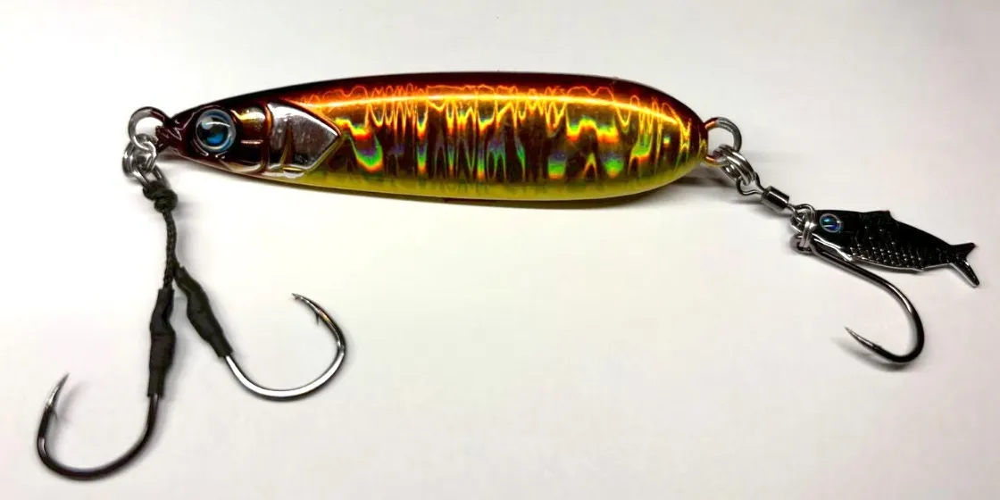
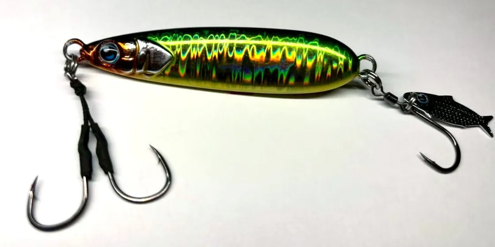
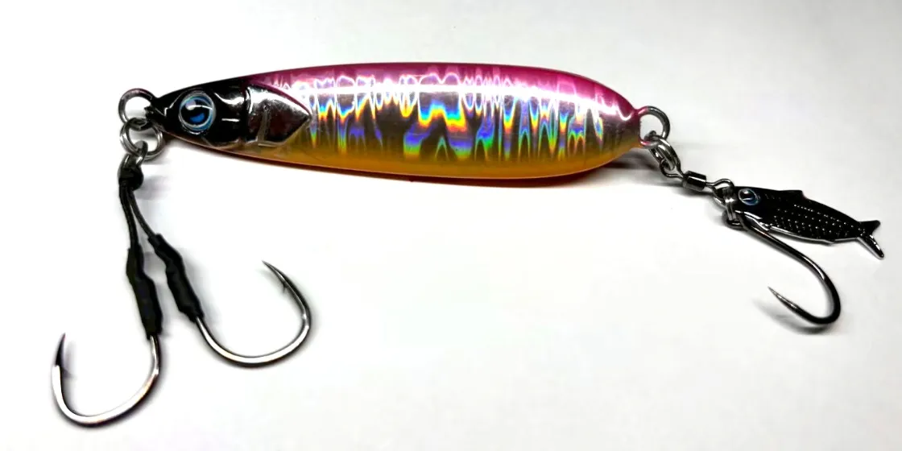
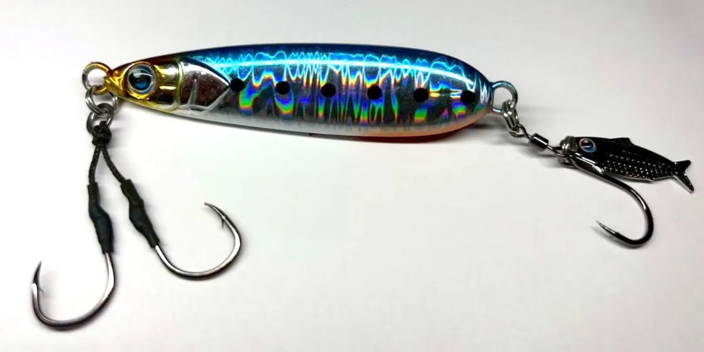

スローマーク
（SLOW MARK）
スローマーク（SLOW MARK）はON THE BLUE（オンザブルー）のブレードジグです。
ハードルアーの起源とされるスプーンの形を取り入れたスプーンジグで、1秒1回転を基準に、ゆっくり巻くだけでいろいろな魚が釣れるのが最大の魅力。年間300回以上出船する遊漁船が開発したルアーです。

画像出典:ON THE BLUE公式HP
スペック
- メーカー
- ON THE BLUE（オンザブルー）
- タイプ
- ブレードジグ（スプーンジグ）
- 重さ
- 40g／60g／80g／100g
- 全長
- 約62mm（40g）〜約83mm（100g）※販売店情報
- フック
- フロントツインフック＋リアのベイトブレード
- 推奨ライン
- PE0.8〜1.5号／リーダー12〜20lb
- ターゲット
- マダイ・サワラ・青物・ロックフィッシュ・フラットフィッシュ
- 価格
- 1,430円〜1,804円（税込）
- 発売
- 2026年7月
▼今すぐチェック


スローマークの特徴
速巻きのブレードジグに反応しない魚を、ゆっくり見せて食わせるスプーンジグ
-
ゆっくり巻くだけでアクション
1秒1回転を基準にゆっくり巻くだけで、フラットフォールと綺麗なウォブリングアクションを繰り返す。速巻きのブレードでは反応しない魚に口を使わせるための設計だ。
-
回転しにくい完全非対称ボディとリア重心
ただ巻きでアクションしながら回転しにくい、完全非対称のボディ。リア重心でフォールが速く、飛距離も出るので、船からもショアからも使える。
-
群れを演出するベイトブレード
リアには小魚の形をした「ベイトブレード」を装備。フラッシングに加えてベイトの群れを演出する。タングステンジグの代わりにも本気で使えるコンパクトなシルエットに仕上げている。
スローマークの使い方
使い方は「投げる、落とす、ただ巻き、落とす」の繰り返しです。
1秒間に1回転を基準に、とにかくゆっくり巻くのがコツです。マダイや根魚は底付近をゆっくり、青物やサワラは中層や水面下を誘いましょう。
スローマークの得意な状況
速い流れに付く魚や、ボトムの魚、低活性な魚を狙う場面が出番です。
SLJやマダイジギング、ロックフィッシュに加えて、サーフなどショアからのキャスティングにも使えます。
速巻きに反応しない魚にゆっくり見せられるので、ほかのブレードジグで釣れない時の一手になります。
ワンポイント
公式は、タイラバやSLJのタックル、またはキャストできるスピニングタックルにPE0.8〜1.5号、リーダー12〜20lbを推奨しています。リアのベイトブレードは、交換用のフックセットも販売されています。
サワラ狙いならワイヤーリーダーも
サワラ・サゴシの鋭い歯でリーダーごとジグを切られないように、ジグの前に30cm以内の短いワイヤーリーダーを付けておくと安心です。カッターが少ない日は外して、状況に合わせて使い分けましょう。くわしくはサワラのブレードジギング完全ガイドで紹介しています。

スローマークの重さの使い分け
| 重さ | 全長の目安／価格（税込） | 得意な場面 |
|---|---|---|
| 40g | 約62mm／1,430円 | 浅場やショアからのキャスティングに |
| 60g | 約70mm／1,562円 | SLJや中くらいの水深に |
| 80g | 約78mm／1,683円 | 深めのポイントや流れのある場所に |
| 100g | 約83mm／1,804円 | 深場や潮の速い場所で底を取りたい時に |
全長は販売店の掲載情報による目安（アイを含まない長さ）です。重さは水深と潮の速さに合わせ、底を取りやすいものを選びましょう。
人気カラー
スローマークは全6色展開。人気カラーを紹介します。

レッドゴールド説明不要の万能カラー「アカキン」。岩礁帯やロックフィッシュにも。

グリーンゴールドSLJで人気No.1の定番カラー。曇天や濁り潮に効く。

ピンクオレンジチャートアピールNo.1のチャート系。ブレードジグでは珍しいカラーなので、迷った時に試したい。

フラッシングイワシ弱ってよろめくイワシをイメージしたカラー。ベイトが多い状況に。
画像出典:ON THE BLUE公式HP
▼今すぐチェック
スローマークに似ているルアー
-
 サムライジグR スピン
ダイワ
詳細はこちら＞
サムライジグR スピン
ダイワ
詳細はこちら＞
小型ブレードで超早巻きに対応するブレードジグ。速巻きで反応を見たい時に使い分けたい。
-
 ビッグバッカー Eブレード W
ジャッカル
詳細はこちら＞
ビッグバッカー Eブレード W
ジャッカル
詳細はこちら＞
ボディのワイドアクションとブレードで寄せるブレードジグ。ただ巻きで、サーフや堤防を1秒1回転ほどのスローでも探れる。
-
 ぶっ飛びスプーン
ジャンプライズ
詳細はこちら＞
ぶっ飛びスプーン
ジャンプライズ
詳細はこちら＞
スプーンの形をしたハイブリッドジグミノー。30g・38gで100m飛ぶ飛距離を活かし、サーフや磯から広く探りたい時に。